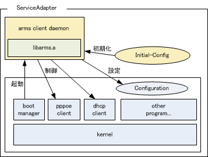

libarms は、SMFv2 システムで利用されるARMS プロトコルを用いて、コンフィグ自動取得、集中管理といった機能を実現するためのライブラリである。 本文書では、libarms が提供する機能、動作するために必要な条件および libarms API の詳細仕様を解説する。
libarms は用途に合わせて2種類の提供方法が用意されている。
ソースコードからコンパイルすることで利用可能なライブラリ。 利用条件は特に無く、自由にダウンロードして使うことができる。 ただし、匿名PPPoEアカウントを用いたサーバ接続を利用することはできない。
ノート
オープンソース版の提供は Ver5.00 から開始された。それ以前のバージョンでは特定ベンダ向けバイナリ版のみの提供を行っていた。
IIJにて特定ベンダ向けのクロスコンパイル環境等を用いてコンパイルした上で 提供されるライブラリ。ベンダごとに専用の鍵を用いて暗号化された秘匿情報を持たせてあり、匿名PPPoEアカウントを利用することができる。
libarms を利用するために必要なハードウェアおよびソフトウェアの仕様、libarms を提供可能なネットワーク環境を示す。
組込先ハードウェアとして必要な構成および仕様は以下の通りである。
| CPU | 特に制限なし(POSIX準拠相当のOSが動作すること) |
| メモリ | libarms単体ではテキストエリア等で約200KB、 ワークエリア等は別途必要。その他クライアント プログラムや関連ライブラリを追加する場合は それに伴い使用量が増加 |
| 外部ストレージ | SSL証明書の保存などに必要 |
libarmsをコンパイルするために必要なソフトウェア環境は以下の通りである。
オペレーティングシステム
特定のOS には依存しない。POSIX 準拠OS であればほぼ全ての環境でlibarmsをコンパイルすることが可能。(Linux, FreeBSD, OpenBSD, NetBSD など)
ライブラリ
libarmsでは、以下に示すライブラリを利用する。
ライブラリ名 |
バージョン |
利用目的 |
|---|---|---|
libc |
－ |
メモリ操作、文字列操作、ソケット入出力など |
expat |
2.00以降 |
XML操作ライブラリ(メモリ操作のみ) |
OpenSSL |
0.9.6以降 |
LS/RSとのSSL通信 |
なお、これらのライブラリで利用する関数の一覧は 使用するライブラリ関数一覧 を参照。
libarms を利用するにあたり、以下のネットワーク環境が用意されている必要がある。
インターネット接続
libarmsは、インターネット上に設置されたLS、RS と通信を行う。このため、以下に示した手段のいずれかの方法でインターネット通信が可能となっていなければならない。
PPPoEが利用可能なフレッツ回線環境
libarmsを組み込む機器が、直接PPPoEを用いてインターネットへの通信が可能な環境であること。
IIJmobile対応のモバイル通信環境
libarms を組み込む機器が、直接IIJmobile 対応のモバイル通信端末を用いてインターネットへの通信が可能な環境であること。
DHCPによりグローバルアドレスの払い出しが受けられる環境
libarms を組み込む機器が、DHCP により直接グローバルアドレスの払い出しを受けることができ、インターネットへの通信が可能な環境であること。
DHCP によりプライベートアドレスの払い出しを受けられる環境
libarms を組み込む機器が、DHCP によりプライベートアドレスの払い出しを受け、NAT 経由でインターネットへの通信が可能な環境であること。ただし、この環境での動作はlibarms ver3.00以降が必要となる。
RA(ルータ広告)によりIPv6アドレスの払い出しを受けられる環境
libarms を組み込む機器が、RAによりIPv6アドレスの払い出しを受けることができ、インターネットへの通信が可能な環境であること。
静的IP アドレスが事前に付与されている環境
libarms を組み込む機器が、何らかの方法により事前にグローバルアドレスを付与されている環境であること。
libarms を組みこむ際の、全体のシステム構成と動作の概要について以下に解説する。 以下の図は、システムが一般的なUNIX 環境で構築されている場合にlibarms を組み込む際の構成図である。なお、システムやOS の仕様によって組込モデルは変わる可能性があるため注意すること。
既存のシステムにおける各要素(kernel, userland 等の各プログラム) を変更する必要は通常は無い。 ただし、以下のプログラム/ファイルを追加する必要がある。
arms client daemon
libarms のAPI を呼び出し、各種制御を実行するためのプログラムである。 libarms のライブラリ本体や各種ライブラリ(OpenSSL,expat 等) をリンクする必要がある。 サービスアダプタがPushに非対応の場合は、Pull が終了後にプログラムが終了してしまっても構わないが、 Push に対応する場合はdaemon としてバックグラウンドで動作し続ける必要がある。
Initial-Config
LS に接続するための各種情報を格納するための領域。 libarmsオープンソース版を用いる場合、必要な情報はlibarms自体に埋め込まれているため不要となる。匿名PPPoEアカウントを利用して接続を行う場合、libarmsのビルドオプションを変更し、IIJから提供されるInitial-Configを用いる必要がある。
SSL 証明書/Distribution ID
LS/RS に接続するためのSSL 証明書、およびDistribution ID。これらはlibarms の初期化情報として利用される。
libarms を用いる場合、OpenSSL およびexpat ライブラリが必要となる。 ここで示すコンパイルオプションを変更すると、予期しないエラーが発生する可能性があるため、注意すること。 なお、動作環境がコンパイル環境と異なる場合は別途クロスコンパイル環境を構築する必要がある。
OpenSSL:
http://www.openssl.org/
から最新版を取得して展開する。展開したディレクトリ内で以下のコマンドを実行する:
% ./config -shared --prefix=<install directory>
% make
% make test
% su
# make install
expat:
http://expat.sourceforge.net/
から最新版を取得して展開する。展開したディレクトリ内で以下のコマンドを実行する:
% ./configure --prefix=<install directory>
% make
% su
# make install